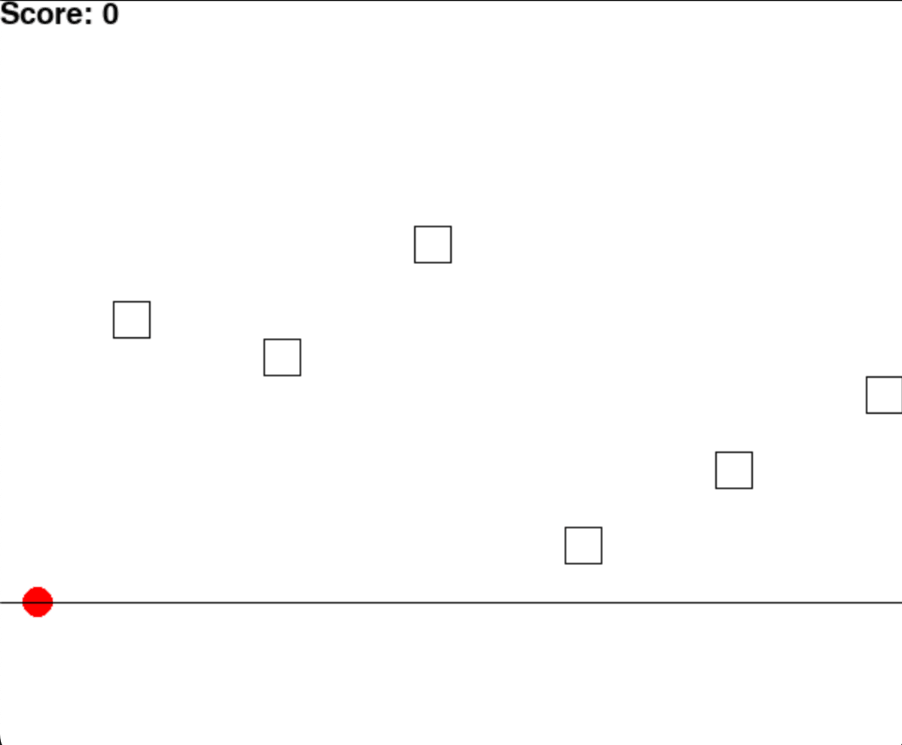
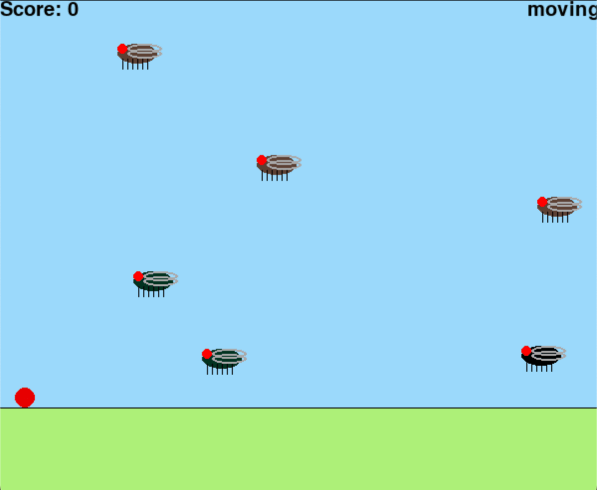

With the pygame library, I modified a homework implementation of a ball game to create a challenging and engaging user experience. Previously, a user would target six blocks with a ball by clicking on the screen and dragging the mouse leftwards at an angle.
This rudimentary game, which suffered from bland graphics and mechanics, needed improvement. I informally interviewed a small group on how I could best improve the game. The consensus among the interviewees was to update the game’s graphics and difficulty.
After establishing a ground and sky plane with color, I decided to change the representation of the ball’s target to a fly sprite. Changing the sprite proved to be the most difficult issue I encountered. I tested a myriad of shape combinations and sizes until I reached a satisfying composition.
To adapt the game’s difficulty, I decided that animating the flies to flutter around the screen would be sufficient. I modified the movement mechanics of the ball to move the flies. I decided that having the ability to toggle between difficulty modes would allow a more personalized experience: when pressing the spacebar, the flies will either stop moving, to make hitting easier, or begin hovering to increase difficulty.
Finally, I implemented more mechanics to allow for smoother gameplay. This included returning the ball to its original position when the "r" key is pressed, providing a message display when the player has won the game and a method to restart the game after winning.
Upon completion, I presented the final game to the same group and surveyed reactions. All users noted a vast improvement and feelings of satisfaction in the new variation.
|

Original Implementation |

Improved Implementation |